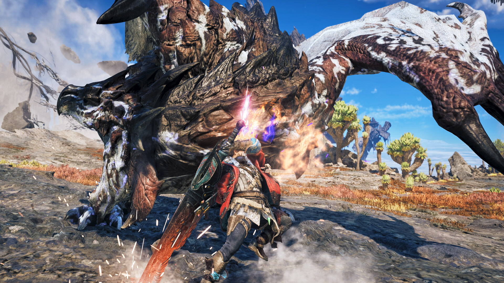

『モンハンワイルズ：アセンダンス』ベータテスト実施の日が近い？Steam本編オープンベータ用アプリの名称と画像が更新
https://gamespark.jp/article/2026/11/11/174746.html?utm_source=twitter&utm_medium=social&utm_content=tweet…
SteamDBにて確認。名称や画像が明らかに「アセンダンス」のものに変更されています。


